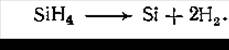
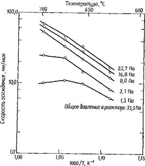
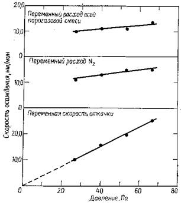
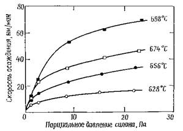
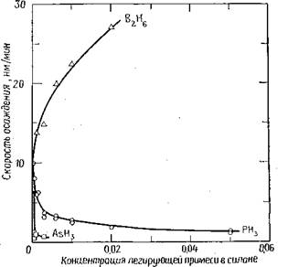
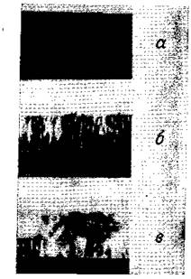

электронный
ресурс по учебной дисциплине 1-58 01 01 - "ИНЖЕНЕРНО-ПСИХОЛОГИЧЕСКОЕ ОБЕСПЕЧЕНИЕ ИНФОРМАЦИОННЫХ ТЕХНОЛОГИЙ"
|
||
| Оглавление | Программа | Теория | Практика | Контроль знаний | Об авторах | ||
|
Практика
ЛАБОРАТОРНАЯ РАБОТА №5 Исследование процессов получения поликристаллического кремния Цель работы: Изучить основные характеристика процесса осаждения пленок поликремния из смеси силана с азотом. Написать программу и построить зависимости выходных параметров от входных. Теоретические сведения Поликремний используется в качестве затвора в МОП-приборах, для формирования высокоомных резисторов, в качестве диффузионных источников при создании мелких р—n-переходов, для формирования проводящих дорожек и для обеспечения невыпрямляющих контактов к монокристаллическому кремнию. Поликремний осаждается путем пиролиза силана при температуре 600—650 °С в реакторах, работающих при пониженном давлении. Протекающая при этом химическая реакция выглядит следующим образом:  4.1 Последующие технологические процессы при формировании поликремниевых затворов включают в себя легирование, травление и окисление. При создании некоторых специальных приборов осаждают второй слой поликремния. Этот слой может использоваться как материал контакта через небольшие окна, вскрываемые в изоляторе, или как перемычка между проводящими дорожками. Для нанесения поликремния обычно используют два вида процессов осаждения при пониженном давлении. В одном используется 100%-ный силан при давлении в реакторе 25— 130 Па. Другой процесс проводится при том же давлении, но с использованием 20—30%-ной смеси силана с азотом. Оба вида процесса позволяют одновременно обрабатывать от 100 до 200 подложек, а достигаемая однородность пленок по толщине составляет 5%. Скорость осаждения лежит в интервале 10— 20 нм/мин. Параметры процесса осаждения. Наиболее важными параметрами процесса осаждения поликремния являются температура, давление, концентрация силана и легирующей примеси. Такие параметры, как расстояние между подложками и количество подложек в реакторе, оказывают лишь незначительное влияние на процесс осаждения.  Рисунок 1 – Кривые Аррениуса для процесса осаждения поликремния при различных значениях парциального давления силана Как показано на рис. 1, скорость осаждения быстро возрастает с ростом температуры. Рассчитанная исходя из наклона кривой Аррениуса энергия активации процесса осаждения составляет —1,7 эВ (40 ккал/М), что несколько выше энергии активации процесса осаждения при атмосферном давлении. Разница обусловлена изменением интенсивности процесса десорбции водорода, являющегося продуктом реакции, и перераспределением основных ролей между процессами массопереноса и гомогенными реакциями в газовой фазе. Осаждение при пониженном давлении ограничивается температурами 600—650 °С. При повышении температуры более важную роль начинают играть химические процессы не на поверхности подложек, а в газовой фазе, что приводит к образованию рыхлого, беспорядочно осаждающегося слоя. Кроме того, при повышенных температурах происходит более сильное обеднение газовой фазы силаном, что сказывается на однородности толщины осаждаемого слоя поликремния. При температурах значительно меньше 600 °С процесс осаждения становится малоэффективным за счет резкого уменьшения скорости осаждения. При осаждении поликремния выходная зона печи зачастую нагревается на 5—15°С выше, чем входная зона и центральная часть. Более высокая температура приводит к возрастанию скорости осаждения, компенсируя тем самым обеднение парогазовой смеси силаном. При оптимальных условиях повышение скорости осаждения обеспечивает более однородную толщину слоя вдоль всей рабочей зоны реактора. Однако структура поликремния сильно зависит от температуры осаждения, поэтому подъем температуры может привести к изменению в структуре и свойствах пленок. Давление газов в реакторе, работающем при пониженном давлении, можно варьировать путем изменения скорости газового потока при неизменной скорости откачки или путем изменения скорости откачки при постоянном расходе газовой смеси. Если входящий в реактор газ представляет собой смесь силана с азотом, то при постоянном расходе силана можно изменять расход азота или одновременно изменять расход обоих газов, сохраняя неизменным их соотношение в газовой смеси. Все три метода — изменение скорости откачки, изменение расхода азота и изменение общего расхода газовой смеси — используются для управления давлением в реакторе. Когда изменяется общий расход газовой смеси при неизменных скорости откачки и соотношении компонент газовой смеси, скорость осаждения линейно зависит от давления, но если меняется только скорость откачки или только расход азота, то скорость осаждения слабо зависит от давления (рис.2). Наилучшая воспроизводимость процесса осаждения достигается в тех случаях, когда общий расход парогазовой смеси остается постоянным, а давление контролируется скоростью откачки.  Рисунок 2 – Влияние общего давления в реакторе на скорость осаждения поликремния Скорость осаждения поликремния обычно нелинейно зависит от концентрации силана. На рис. 3 представлены экспериментальные данные по скорости осаждения поликремиия при разной температуре процесса и общем давлении в системе, равном 33 Па. Нелинейность скорости осаждения может быть связана с эффектами массопереноса, протеканием гомогенных реакций или изменением адсорбции водорода. При высоких концентрациях силана фазообразование начинается уже в газовой фазе, поэтому существуют верхние пределы для концентрации силана в газовой фазе и скорости осаждения при заданных температуре и давлении в реакторе. Поликремний может быть легирован в процессе осаждения за счет добавления в реакционную смесь фосфина, арсина или диборана. На рис. 3 показано влияние концентрации легирующих добавок, вводимых в парогазовую смесь, на скорость осаждения поликремния. Как можно видеть, диборан вызывает сильное увеличение скорости осаждения, а добавление арсина или фосфина резко снижает скорость осаждения. Аналогичные зависимости наблюдаются в процессах осаждения при атмосферном давлении. При введении легирующих добавок, кроме того, уменьшается равномерность толщины осаждаемых пленок по поверхности подложки. Поддерживать равномерность толщины осаждаемой пленки можно путем введения специальных прокладок, управляющих процессом протекания реакционных газов вокруг подложек.  Рисунок 3 – Влияние концентрации силана на скорость осаждения поликремния  Рисунок 4 – Влияние концентрации легирующих добавок на скорость осаждение поликремния при температуре 610 °С Структура пленок. Структура поликремниевых пленок сильно зависит от вида легирующих компонент или примесей, температуры осаждения и термообработки пленок после осаждения. Поликремний, осаждаемый при температуре ниже 575°С, аморфен по своей структуре без какого-либо видимого упорядочения атомов. При повышении температуры выше 625 °С поликремний становится поликристаллическим и имеет столбчатую структуру.  а —аморфная структура, осажденная при температуре 605 °С; б — столбчатая структура, осажденная при температуре 630 °С; в — кристаллические зерна, полученные отжигом образца с аморфной структурой пленки при T=700 °С. Рисунок 5 – Электронно-микроскопическое изображение сечения слоя поликремиия (Х60 000) Кристаллизация и рост зерен происходят при отжиге аморфного или столбчатого поликремния. На рис. 5 показаны все три типа структуры поликремния — осажденного при температуре 605°С (аморфный), 630 °С (столбчатая структура) и отожженного при 700°С (кристаллические зерна), отснятые на просвет в электронном микроскопе. После высокотемпературного отжига не наблюдается никакой существенной разницы в структуре поликремниевых пленокт— независимо от того, были они первоначально аморфными или имели столбчатую структуру. Температура процесса осаждения, при которой происходит переход от аморфного строения к столбчатой структуре, хорошо известна, но она зависит от многих параметров, в том числе от скорости осаждения, парциального давления водорода, общего давления в системе, наличия легирующих добавок и посторонних примесей (О, N и С). Температура такого перехода для процессов осаждения в газофазных реакторах, работающих при пониженном давлении, лежит в интервале 575—625 °С. Перекристаллизация поликремния происходит при нагреве структур, однако температура кристаллизации сильно зависит от легирующих добавок и примесей. Примеси кислорода, азота и углерода стабилизируют аморфное строение пленки до температур отжига свыше 1000 °С, а мышьяк обеспечивает устойчивость столбчатой структуры до температуры 900 °С. Поликремний, осажденный при температуре 600—650 °С, в основном ориентирован в направлении <110>. При более высоких температурах осаждения зерна в основном ориентированы по <100), однако структура пленок неоднородна и содержит значительное число зерен, ориентированных по другим направлениям типа<110>, <111>, <311> и <331>. Легирующие добавки и примеси также оказывают влияние на предпочтительную ориентацию зерен. Структурные изменения, которые происходят в пленках поликремния в процессе изготовления полупроводниковых приборов, можно подытожить следующим образом. Поликремний, осаждаемый при температуре 600—650 °С, имеет столбчатую структуру с размером зерен 0,03—0,3 мкм и преимущественной ориентацией зерен по плоскости (110). В ходе диффузии фосфора при температуре 950 °С происходит рост кристаллов до среднего размера — от 0,5 до 1 мкм. В процессе окисления при температуре 1050 °С рост зерен продолжается до размера 1—3 мкм. Поликремний, осаждаемый при температуре ниже 600°С, ведет себя при упомянутых операциях аналогичным образом, за исключением того, что первоначальная пленка имеет аморфную структуру. Задание для выполнения лабораторной работы Процесс осаждения плёнок поликремния из 30%-ной смеси силана с азотом происходит при температуре Т °С и давление Р Па. Скорость газового потока составляет V см3/мин при атмосферном давлении. Объём реактора равен L л, его D см, а площадь между подложками и стенками реактора S см. Определите парциальное давление силана, линейную скорость и длительность пребывания газа в реакторе. Варианты заданий:
Порядок выполнения работы 1. Напишите программу, обеспечивающую решение задачи. 2. Постройте зависимости выходных параметров от входных. 3. Оформите отчет и защитите лабораторную работу. Содержание отчета 1. Цель работы. 2. Краткие теоретические сведения. 3. Решение задачи. 4. Код программы и скриншоты рабочих окон. 5. Зависимости выходных параметров от выходных. 6. Выводы по работе. Контрольные вопросы 1. Где применяется поликремний? 2. Какие виды процессов осаждения используются для нанесения поликремния? 3. Опишите параметры осаждения поликремния 4. Назовите типы структур поликремния. 5. Опишите структуру пленок поликремния. 6. Какие структурные изменения происходят в пленках поликремния в процессе изготовления полупроводниковых приборов? Практика
|
| (С) БГУИР |